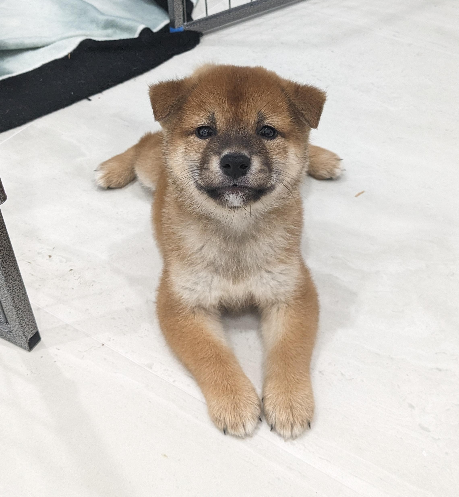
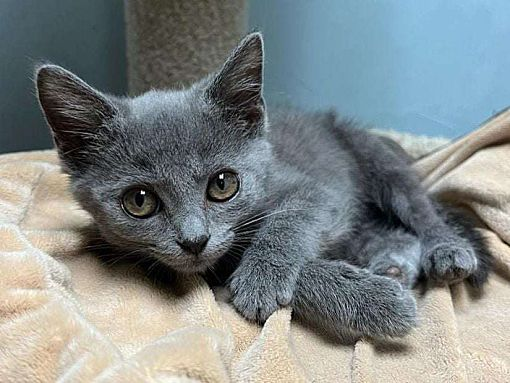
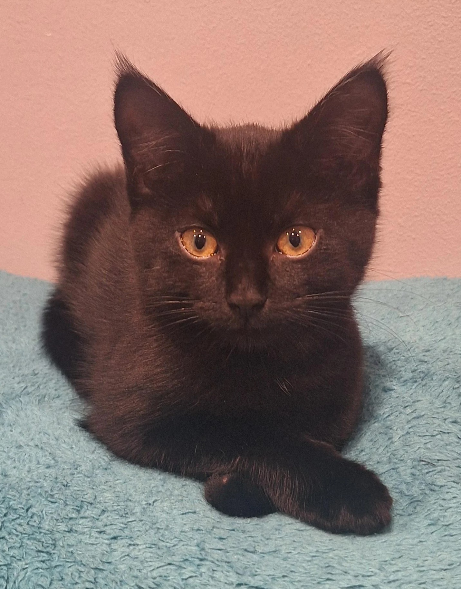

Please fill out our applications for the pet(s) you want online or in person. Once we review it, we will move on to the interview process with our staff.
Requirements in order to adopt:

Name: Thor
Age: 8 weeks old
Breed: Shiba Inu; tan
Description: Very playful, gentle, and sweet!

Name: The Boulder (if you get the avatar reference)
Age: 12 weeks old
Breed: Russian Blue; grey
Description: Has an obsession with rocks, energetic, and kind.

Name: Kyle
Age: 15 weeks old
Breed: Bombay; black
Description: Very energetic, gets along with other animals and people.